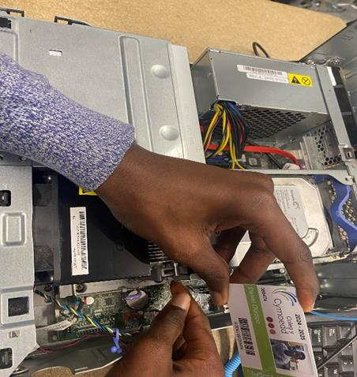
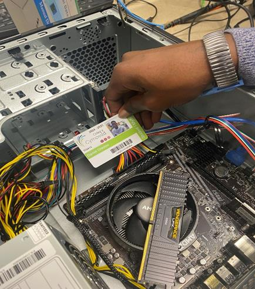
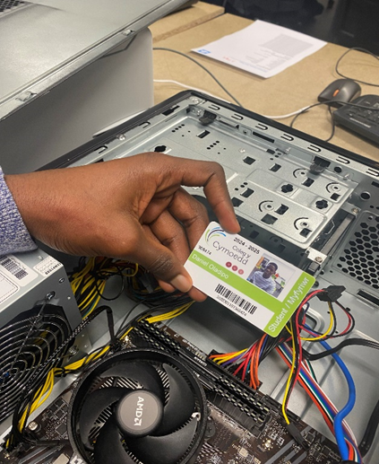
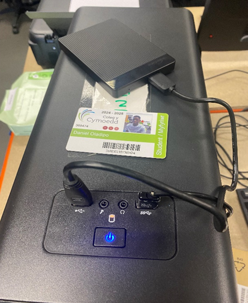

Unit 14 Installing and Maintaining Hardware
In this unit I learnt how to:
- Understand how to replace a cmos battery
- Understand how to check the test score of a monitor
- Understand how to write feedback and also create a test plan
What did you enjoy about this unit?
I like how we write note and also do praticals.
What improvements would you make if you did the unit again?
I would make more detailed writing about the purpose and i will also take a better picture for the work
In the diagram above I repaired the cmos battery because the time and date where incorrect but after replacing the cmos battery the date and time is correct.

This is where I repaired the RAM.

This is where I insert the RAM after repairing it.

This is where I connect the external HDD to the pc.
